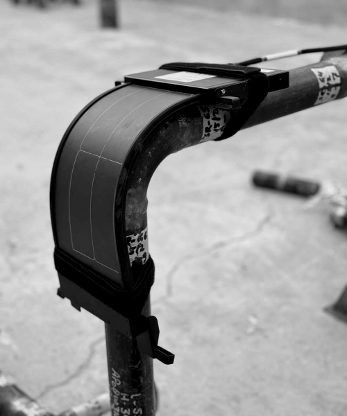
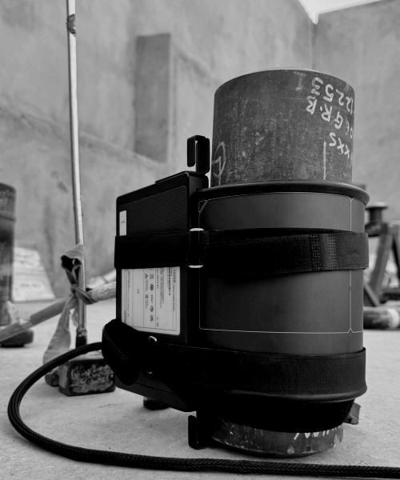
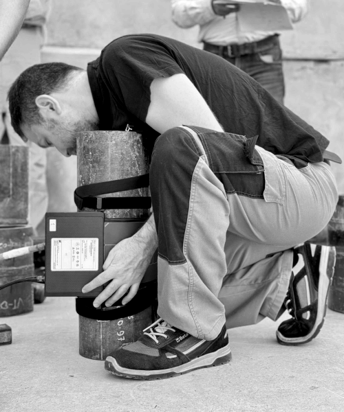
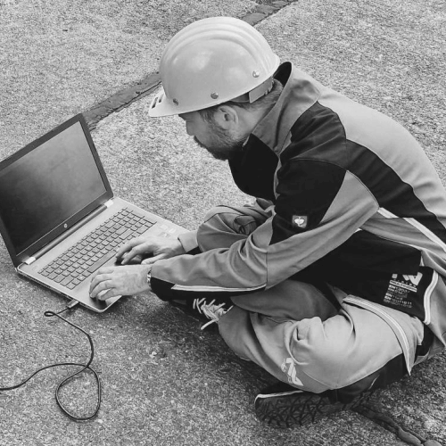
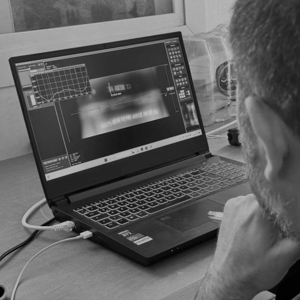
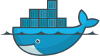
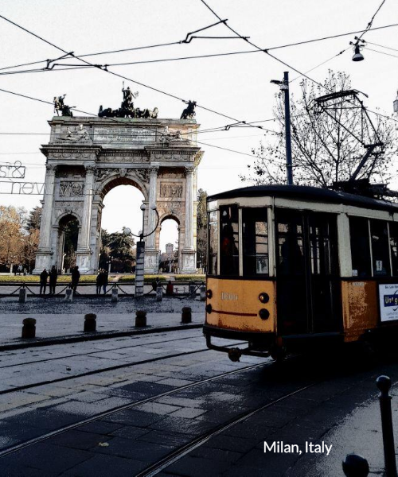
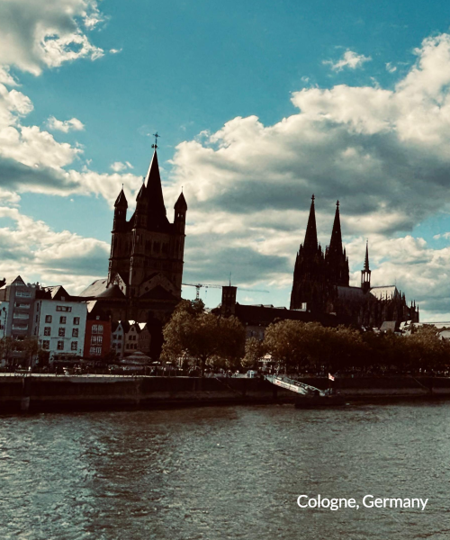
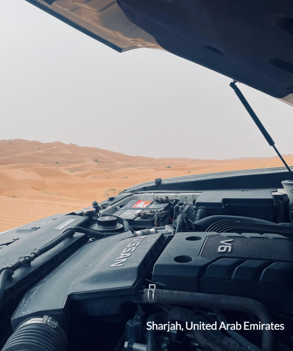
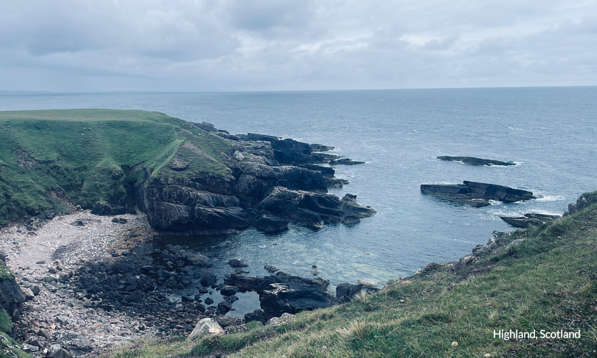

About me
Born in 1985 in Milan, Italy. Based in Cologne, Germany.
Actually working on IT infrastructure and cloud technologies.
Current focus and interests
Proxmox Cluster
Ceph Storage
Linux
Azure
Born in 1985 in Milan, Italy. Based in Cologne, Germany.
Actually working on IT infrastructure and cloud technologies.
Current focus and interests
Proxmox Cluster
Ceph Storage
Linux
Azure
Over the past years I've worked as a Field Support Specialist, overseeing the installation and providing customer training for advanced industrial digital radiography solutions.
Industrial Digital Radiography



RX software & data archiving


I aim to achieve digital independence by building and managing my own IT infrastructure, trying to maintain full control over my systems and data.
Tools, technologies and hardware I use to reach this goal
ubiquiti
debian

docker
raspberry
inkscape
freecad
bambu lab
homematic IP



